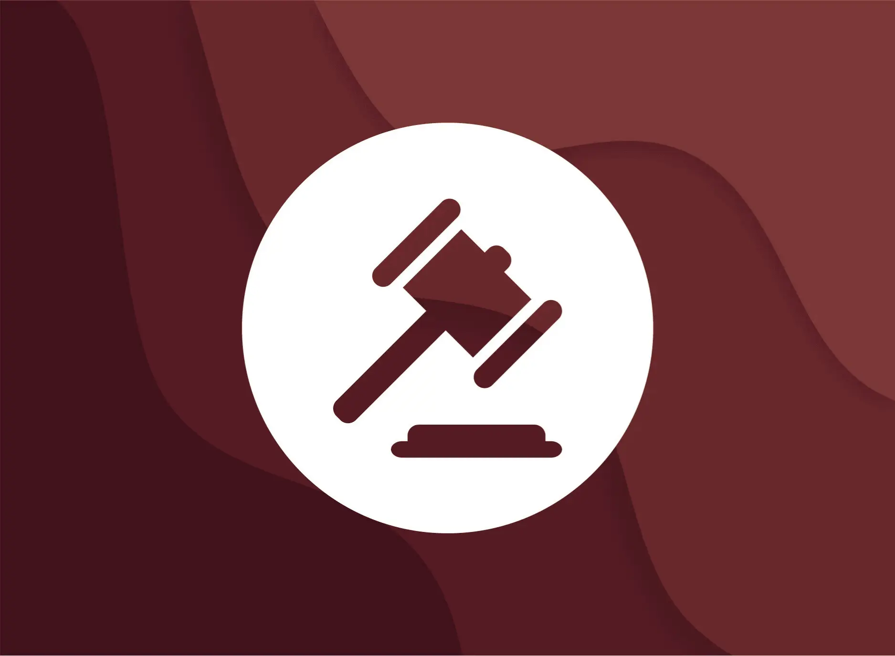

Position papers summarize a country's stance on a topic in order to
aid in negotiations and collaboration with other countries. They help
delegates understand their country's policies and build alliances.

RULES OF PROCEDURE
The Rules of Procedure ensure fair and structured debates, allowing
equal participation, and provide a framework for conflict resolution.
They are essential for the success of the conference and a positive
learning experience.
RESOLUTION PAPER GUIDE
Resolution Papers propose solutions to global issues, provide a
framework for action, and guide international policies. They encourage
collaboration and cooperation among member states to address complex
problems.